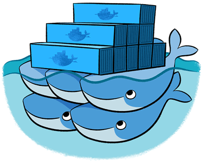

<html>
    <head>
        <script src="./dist/jquery-2.1.4.min.js"></script>
        <script src="./dist/semantic.min.js"></script>
        <script src="./dist/underscore-min.js"></script>
        <script src="./dist/underscore.string.min.js"></script>

        <script src="./demo.js"></script>

        <link rel="stylesheet" type="text/css" href="./dist/semantic.min.css" />

        <style>
            html, body {
               height: 100%;
            }

            html {
                   display: table;
                      margin: auto;
            }

            body {
                   display: table-cell;
                      vertical-align: middle;
            }
        </style>
    </head>

    <body>
        <div id="status" class="ui cards"></div>

        <script id="card-tpl" type="text/x-custom-template">
            <div class="card">
                <div class="image">
                    
                </div>
                <div class="content">
                    <div class="header">
                        <%= Address %>
                    </div>
                    <div class="description">
                        <div class="ui center aligned inverted segment <%
                                if (Error) {
                                    print('red');
                                } else {
                                    print(Role == 'primary' ? 'green' : 'blue');
                                } %>">
                                <%= Error ? "Dead" : s(Role).capitalize().value() %>
                        </div>
                    </div>
                </div>
                <div class="extra content">
                    <% if (Role == 'replica') { %>
                        Forwarding to <b><%= Primary %></b>
                    <% } else { %>
                        &nbsp;
                    <% } %>
                </div>
            </div>
        </script>
    </body>
</html>
